Specializujeme se na výstavbu a rekonstrukce vodovodních řadů, splaškových i dešťových kanalizací, plynovodů, chodníků a parkovišť v Moravskoslezském kraji. Vlastní těžká technika JCB, recyklace stavebních odpadů a autorizovaný inženýr ČKAIT.
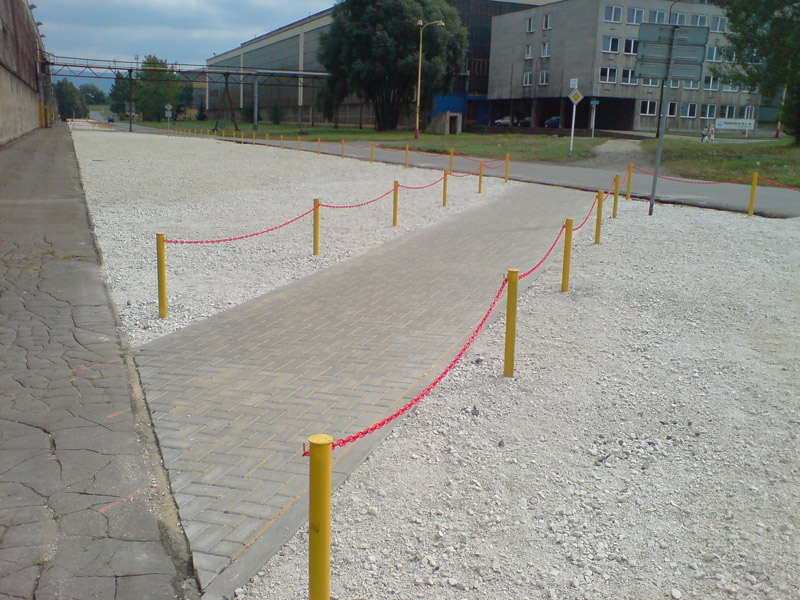
Společnost V+V SAVEKO s.r.o. byla založena v roce 1998 transformací podnikatelských subjektů fyzických osob působících v oblasti stavební výroby a výstavby inženýrských sítí již od roku 1990.
Jedná se o stabilní stavební společnost s 15 stálými kmenovými zaměstnanci. Jednatel společnosti Ing. Vojtěch Přeja vlastní potřebná oprávnění pro stavební činnost dle zákona č. 360/1992 Sb.:
Zaručuje přísnou technologickou kázeň při provádění tlakových zkoušek vodovodů, kamerových prohlídek kanalizací i hutnicích zkoušek vozovek.
Společnost má certifikovaný systém managementu kvality dle ISO 9001:2015 a disponuje zákonnými autorizacemi ČKAIT pro vodohospodářské i pozemní stavby.
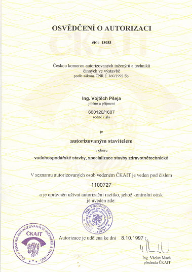
Specializace stavby zdravotnětechnické dle zákona č. 360/1992 Sb.
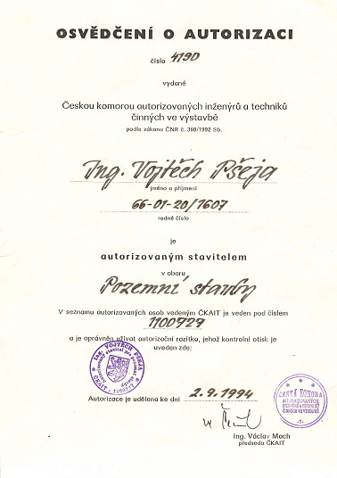
Osvědčení o autorizaci pro garantované technologické postupy pozemního stavitelství.
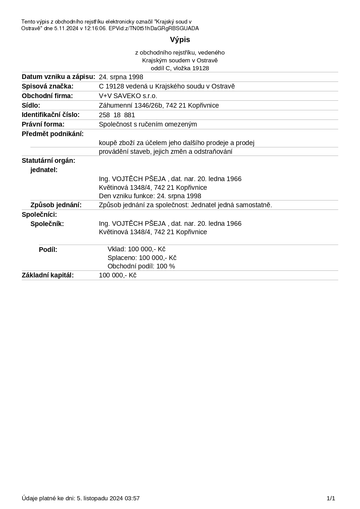
Krajský soud v Ostravě, oddíl C, vložka 19128. Právní kontinuita od roku 1990.
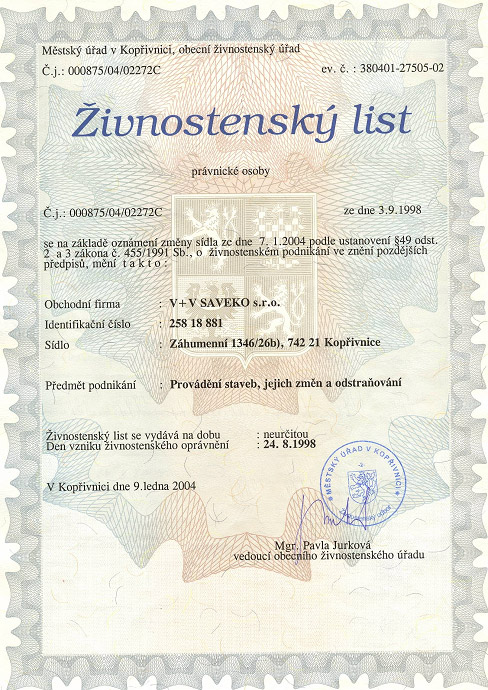
Koncese k provádění staveb, jejich změn a odstraňování včetně inženýrských sítí.
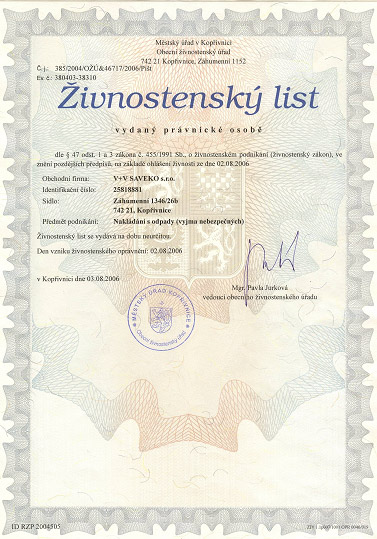
Oprávnění pro silniční nákladní dopravu a nakládání se stavebními odpady.
Od projektu přes zemní práce, pokládku potrubí až po konečnou úpravu povrchů asfaltem nebo zámkovou dlažbou.
Výstavba a rekonstrukce vodovodních řadů z tvárné litiny (LT), PE a PVC. Montáže armatur, hydrantů, vodovodních přípojek, přepojování řadů a odstraňování havárií pro SmVaK Ostrava a.s.
Gravitační i tlakové kanalizační stoky, dešťové svody, prefabrikované betonové i plastové revizní šachty, stavby domovních i obecních ČOV (např. ZŠ Adolfa Zábranského Rybí, DDM Kletné).
Komplexní rekonstrukce místních sítí nízkotlakých a středotlakých plynovodů v zástavbě měst a obcí pro PLYNSTAV s.r.o. a GasNet včetně výměn domovních přípojek.
Výstavba a opravy místních komunikací, chodníkových těles podél silnic II. a III. třídy, bezbariérových tras, parkovišť ze zámkové dlažby a živičných asfaltových krytů.
Stavby kamenných a betonových opěrných zdí podél komunikací a svahů, silniční propustky, dešťové uliční vpusti a čelní odvodnění vozovek.
Vlastní schválený systém výkupu a recyklace sutí, drcení a třídění stavebního materiálu, strojní demolice budov a areálů (např. depozitář muzea Tatra v Kopřivnici).
Díky ucelenému strojnímu parku provádíme veškeré zemní, přepravní a hutnicí práce vlastními silami bez závislosti na subdodavatelích.
Včetně hydraulického bouracího kladiva a hloubkových lopat 30–90 cm
Včetně hydraulického bouracího kladiva pro výkopové a demoliční práce
Otočný nakladač pro manipulaci se sypkými materiály a zásypy rýh
Přeprava výkopové zeminy, recyklátu, štěrků a betonových směsí
Těžká přeprava sypkých stavebních materiálů pro velké liniové stavby
Operativní svoz stavebních sutí a rozvoz hutnicí techniky na staveniště
Mobilní dílenské čety pro svařování potrubí, armování a opravy havárií
Hutnění podkladních štěrkových vrstev a finální pokládka asfaltobetonu
Hutnění rýh inženýrských sítí, obsypů potrubí a podkladů chodníků
Přesné řezání asfaltových a betonových vozovek bez poškození okolí
Čerpání spodní vody z výkopů a nezávislé energetické zdroje v terénu
Naše stavby slouží obyvatelům měst a obcí v Moravskoslezském kraji i významným průmyslovým podnikům.
Štramberk – výměna vodovodního řadu LT DN 150 a kanalizace v lokalitě Bařiny; Vodovod Nový Jičín – Hůrka; VDJ Kopřivnice Bělina; nepřetržitý zásahový servis havárií vodovodů a kanalizací.
Kopřivnice: ul. Zdenka Buriana, Družební, Česká, Obránců míru; Příbor: ul. Lomená a Myslbekova; Nový Jičín: ul. Dolní Brána. Kompletní výkop, uložení plynovodu a obnova asfaltu.
Oprava venkovní a vnitřní kanalizace KOZ I-II; Parkoviště u MŠ Zd. Buriana; Hřiště pro minikopanou v Mniší; Dům dětí a mládeže Kletné – rekonstrukce ČOV; Chodník Vlčovice – Jednota; Demolice bývalého depozitáře Tatra v městském parku.
Stavba čističky odpadních vod u budovy ZŠ Adolfa Zábranského; Chodníková tělesa podél silnice II/482 včetně propustků a opěrného zdiva; Oprava kanalizační stoky jednotné kanalizace.
Rekonstrukce místní komunikace Na Valech v Příboře; Stavební úpravy ul. Palackého v Příboře (chodníky a silnice); Chodníková tělesa Životice podél II/482 směr požární zbrojnice vč. přechodu pro chodce.
Základy stanice kapalného CO2 pro Tafonco a.s.; Oprava vnitrozávodních asfaltových komunikací areálu Kotouč Štramberk; Průběžné opravy vodohospodářských zařízení a horkovodů v areálu Tatra Kopřivnice.
Prohlédněte si průběh liniových výkopů, pokládky potrubí, armování šachet a dokončených povrchů.
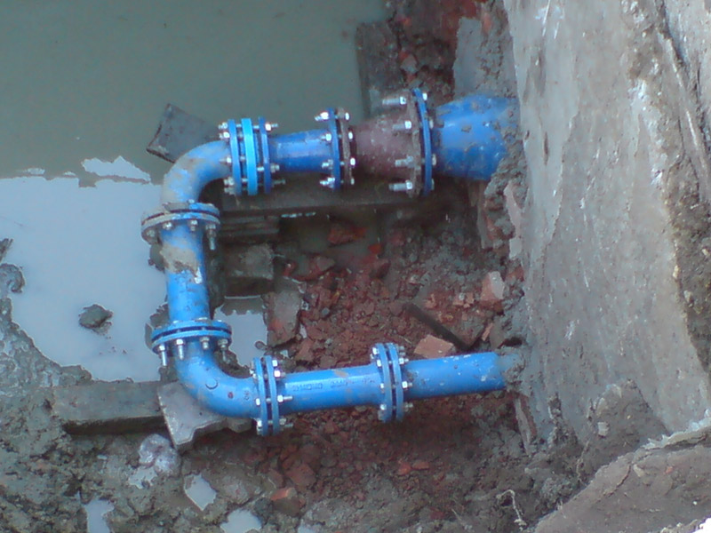
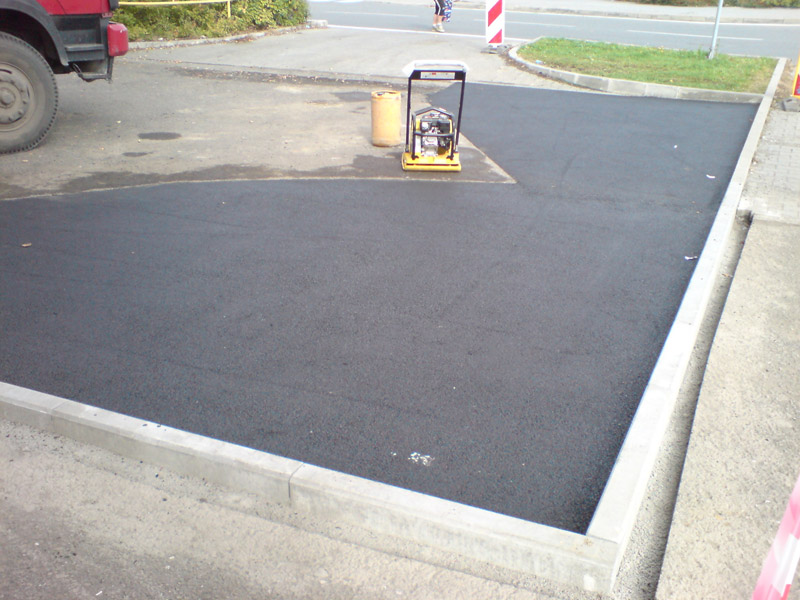
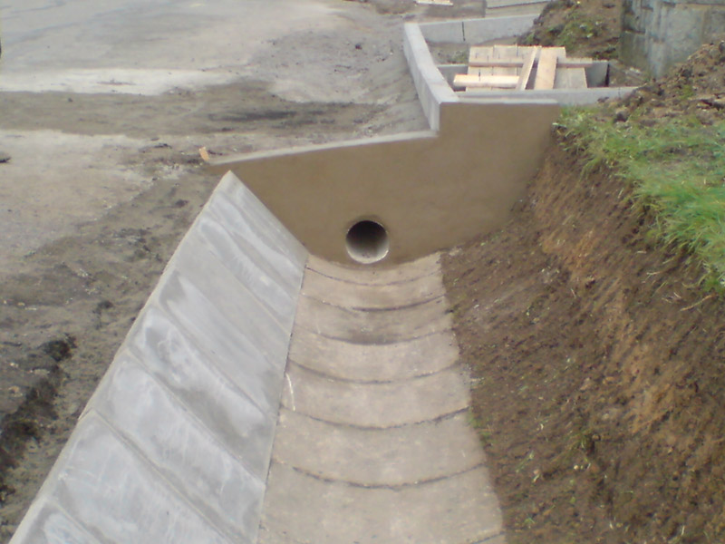
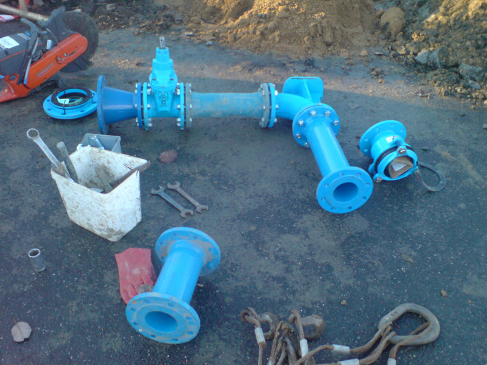
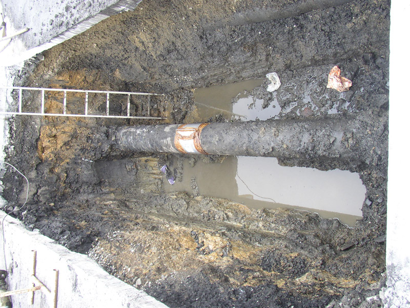
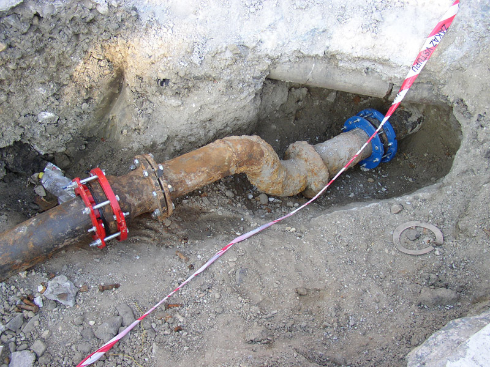
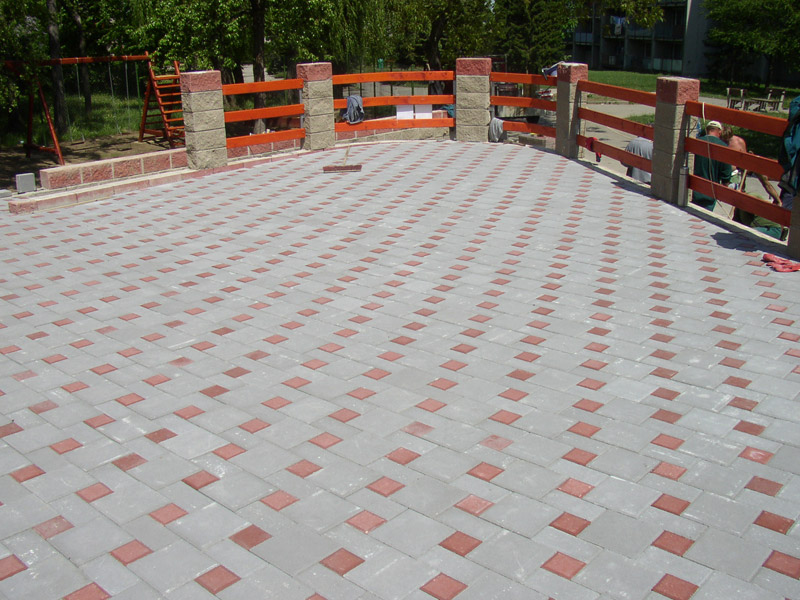
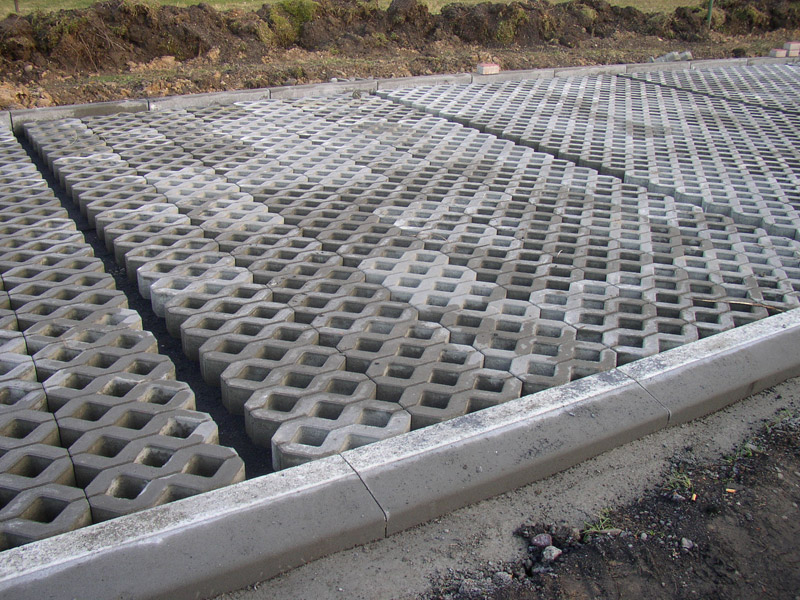
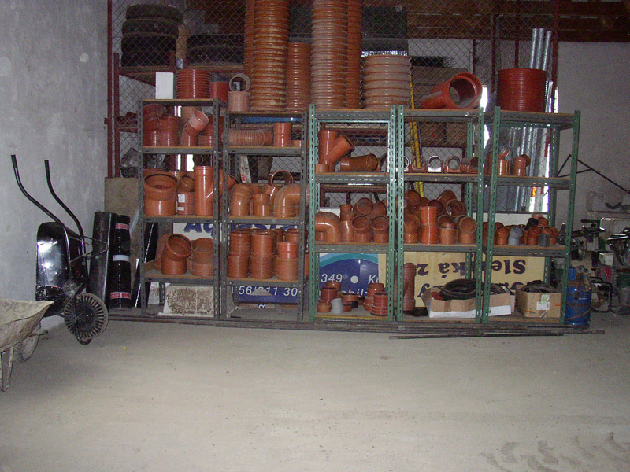
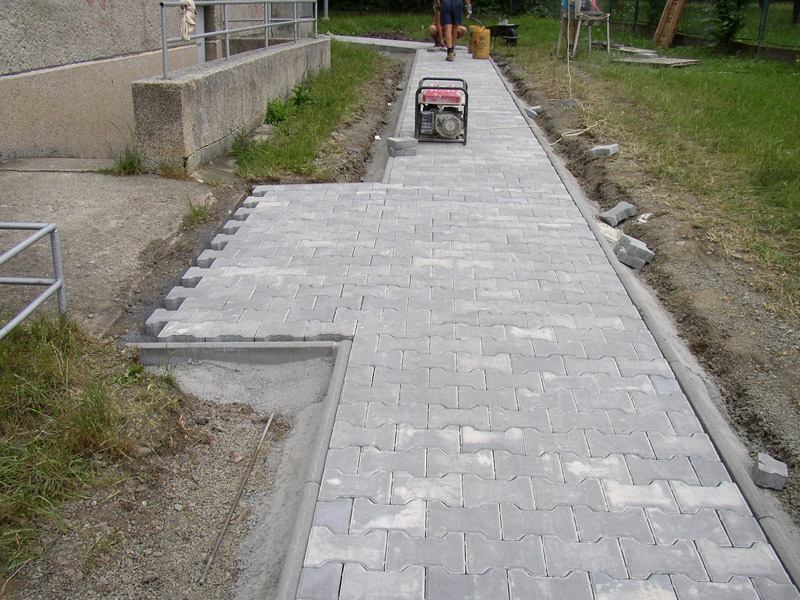
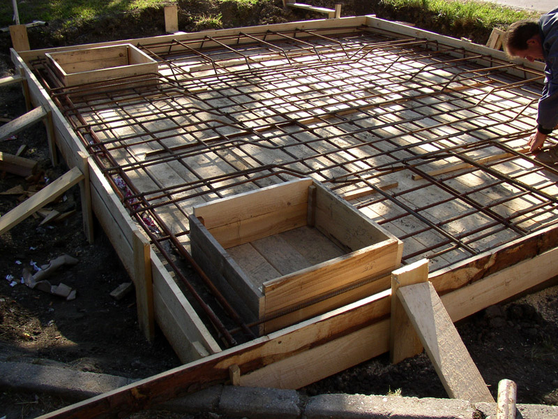
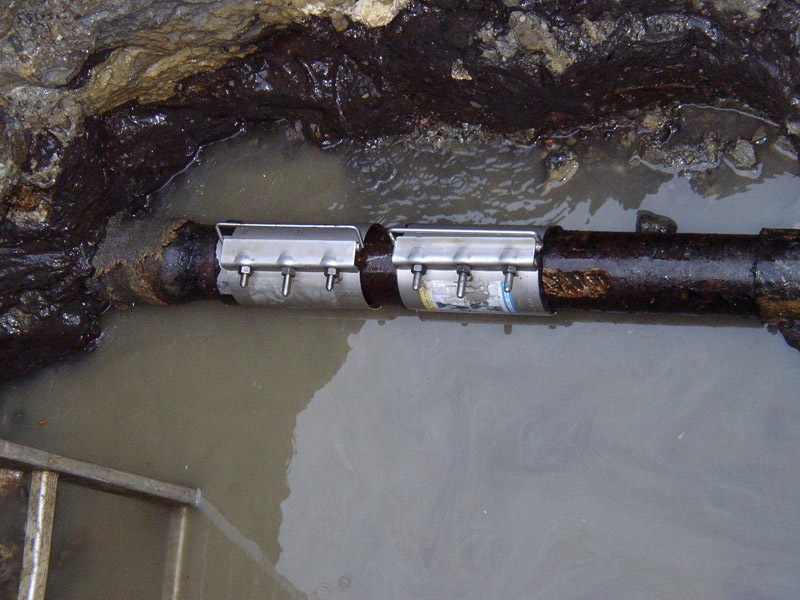
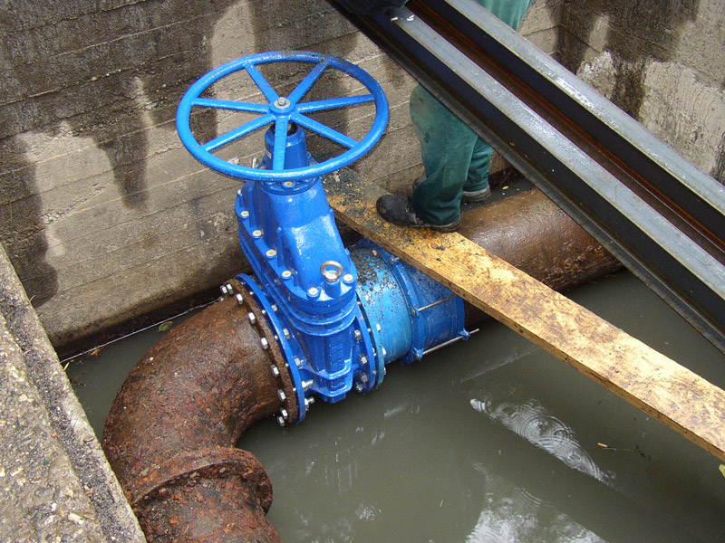
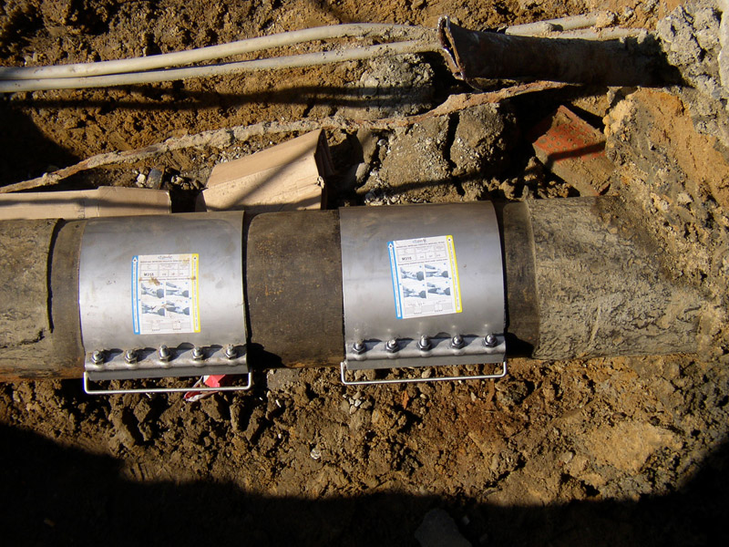
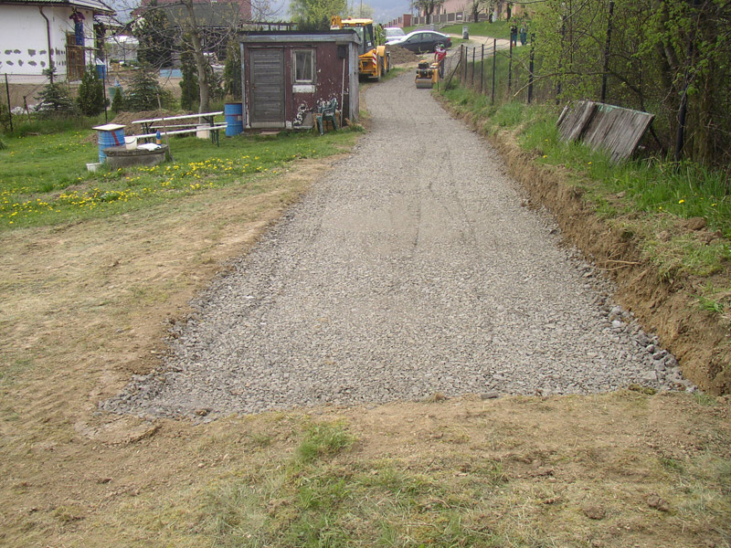
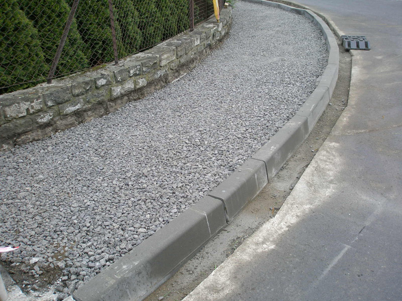
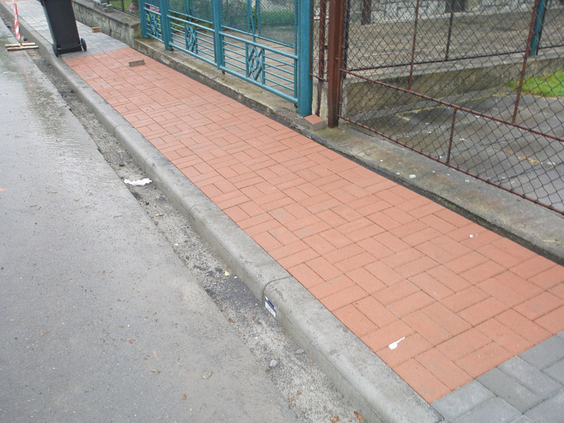
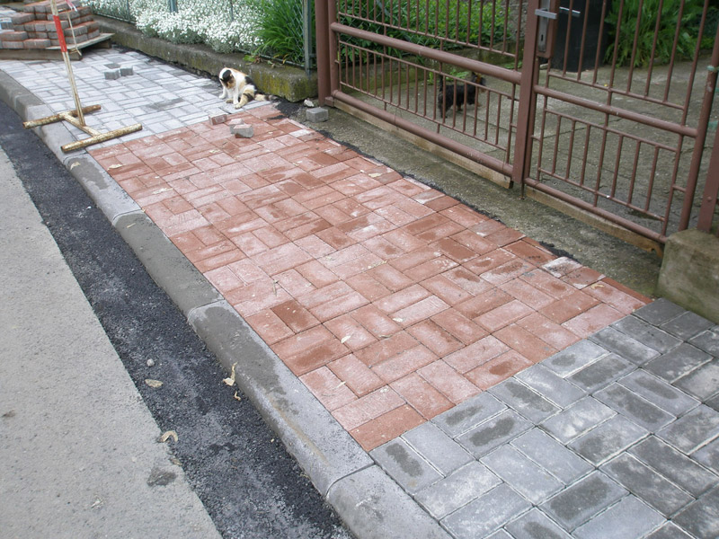
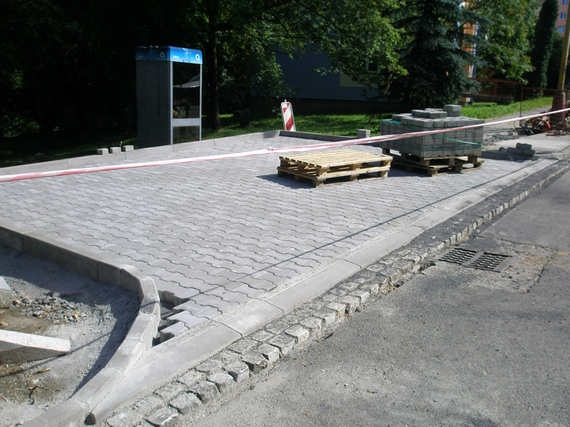
Rádi připravíme rozpočet a technologický postup pro vaši liniovou stavbu, inženýrské sítě nebo komunikaci.